These couple of slides will motivate the usage of the piping operator %>% from the maggritr package.
For a more detailed look at everything the package has to offer, consider reading through the vignette online:
Andrew Do
These couple of slides will motivate the usage of the piping operator %>% from the maggritr package.
For a more detailed look at everything the package has to offer, consider reading through the vignette online:
It's fairly natural that you might want to use the output of one function as the input of another.
as.numeric(str_c(str_match_all(c("1 hundred", "2 tens", "3 ones"), "[0-9]+"), collapse = ""))
## [1] 123
To some extent, you can fix readability with whitespace
as.numeric(
str_c(
str_match_all(c("1 hundred", "2 tens", "3 ones"), "[0-9]+"),
collapse = ""
)
)
## [1] 123
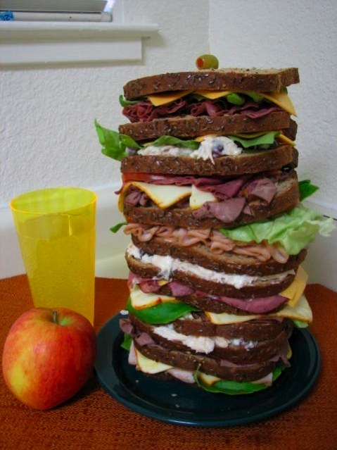
At some point, you'll just end up with a sandwich too impractical for human consumption. The "Dagwood Sandwich" problem.
Thankfully, the maggritr package implements a piping operator %>% that allows you to construct readable sequences of function calls:
number <- c("1 hundred", "2 tens", "3 ones")
number %>%
str_match_all("[0-9]+") %>%
str_c(collapse = "") %>%
as.numeric()
## [1] 123
%>% passes the output of the left function into the first argument of the right function.
The keyboard shortcut for %>% in RStudio is CTRL(COMMAND)+Shift+M
| Verb | Meaning |
|---|---|
| filter | keep rows matching criteria |
| select | pick columns by name |
| arrange | reorder rows |
| mutate | create new variables/modify existing ones |
| summarise | reduce variables to values |
The structure and usage of all dplyr functions is as follows:
dplyr comes with the maggritr package preloaded
flights data from the nycflights13 packagedplyr packagelibrary(nycflights13)
library(dplyr)
flights <- tbl_df(flights)
These next few examples will refer to the following data frame:
df <- data.frame(color = c("blue", "black", "blue", "blue", "black"), value = 1:5)
df
## color value
## 1 blue 1
## 2 black 2
## 3 blue 3
## 4 blue 4
## 5 black 5
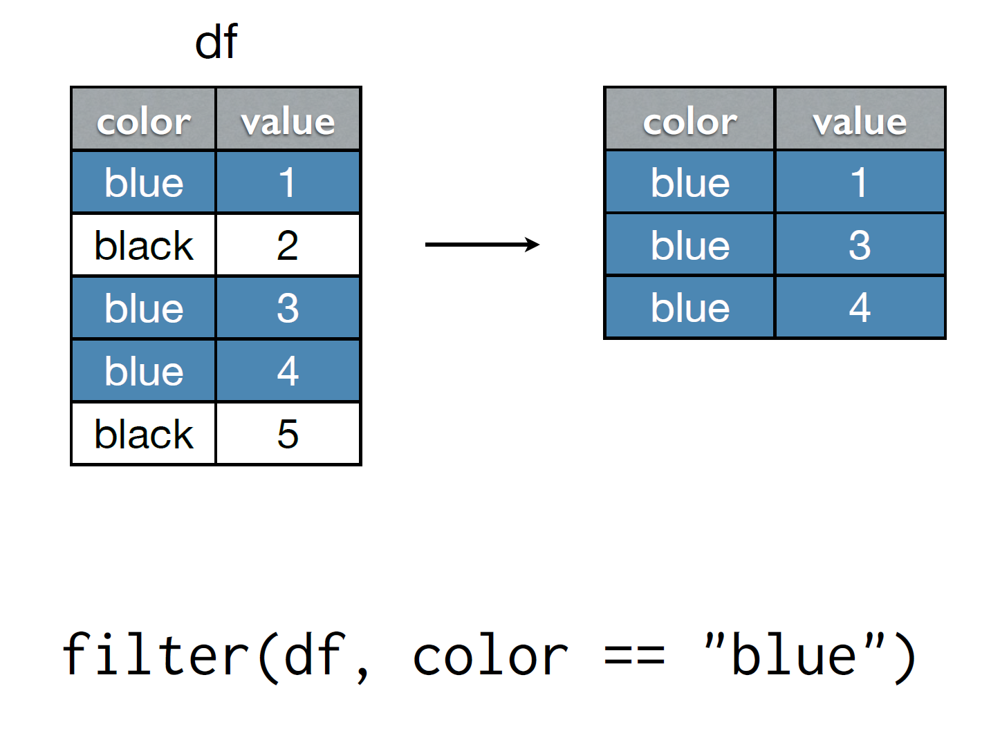
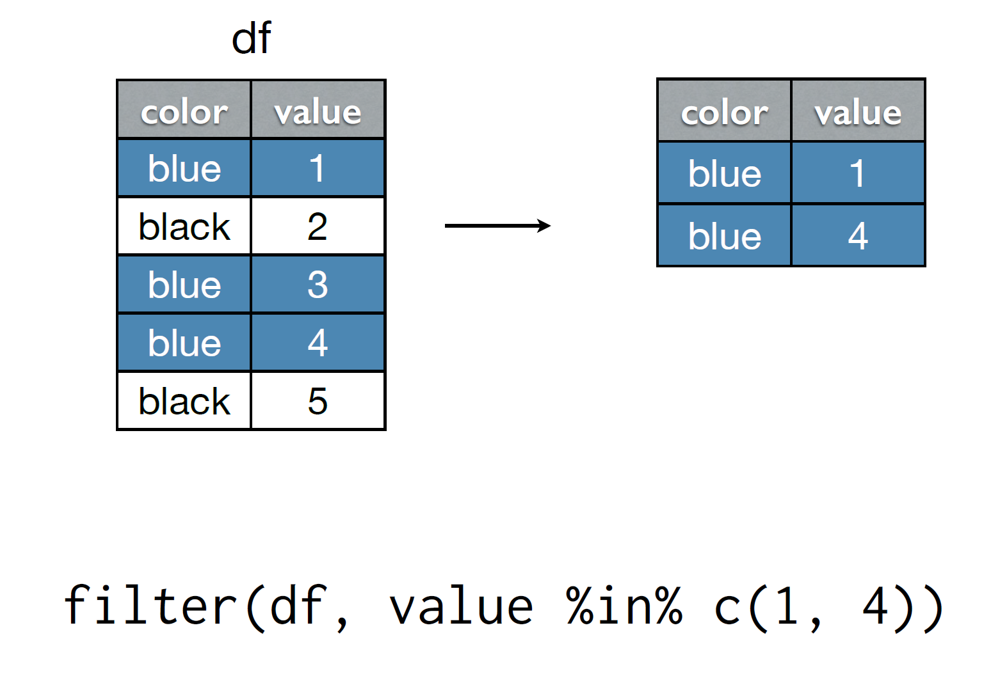
# To SFO or OAK
filter(flights, dest %in% c("SFO", "OAK"))
filter(flights, dest == "SFO" | dest == "OAK")
# Delayed by more than 1 hour
filter(flights, dep_delay > 60)
# Left between midnight and 5am
filter(flights, hour >= 0, hour <= 5)
filter(flights, hour >= 0 & hour <= 5)
# Arrival delay more than twice departure delay
filter(flights, arr_delay > 2 * dep_delay)
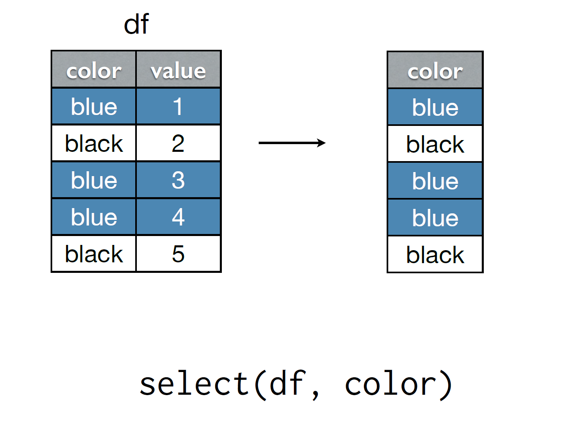
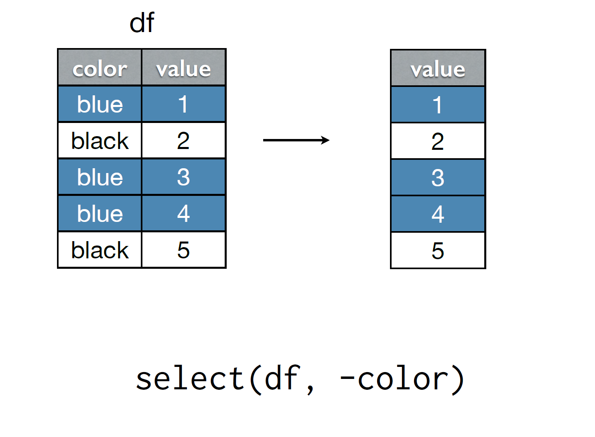
Try the following commands:
select(flights, arrival_delay = arr_delay)
rename(flights, arrival_delay = arr_delay)
select(flights, arr_delay, dep_delay)
select(flights, arr_delay:dep_delay)
select(flights, ends_with("delay"))
select(flights, contains("delay"))
select only keeps the variables you mention; rename keeps all of themends_with and contains are examples of special functions that only work inside selectselect to learn about other special functions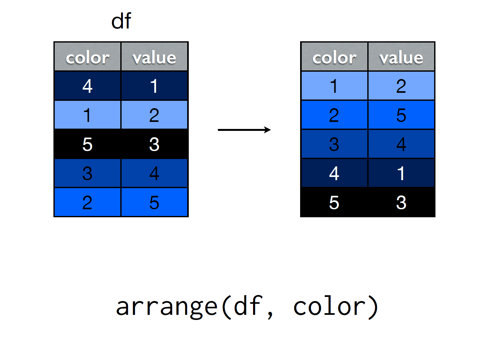
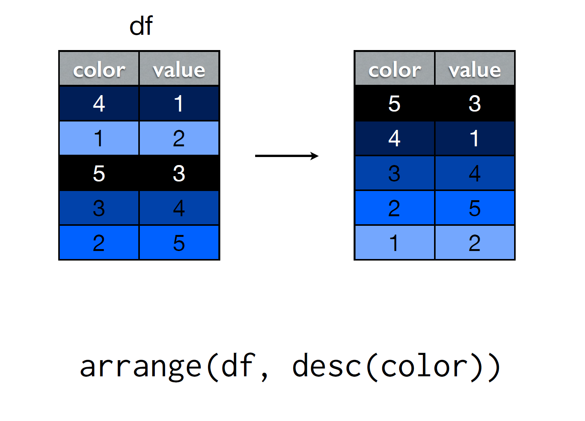
arrangearrange# Ordered by departure date
arrange(flights, year, month, day, hour, minute)
# Most delayed means I need to know ordering
arrange(flights, desc(dep_delay))
arrange(flights, desc(arr_delay))
# Ordered by recovered/lost time during flight
arrange(flights, desc(dep_delay - arr_delay))
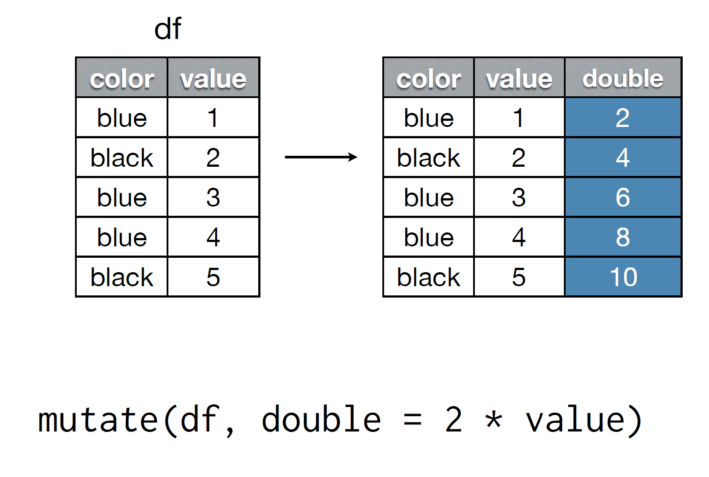
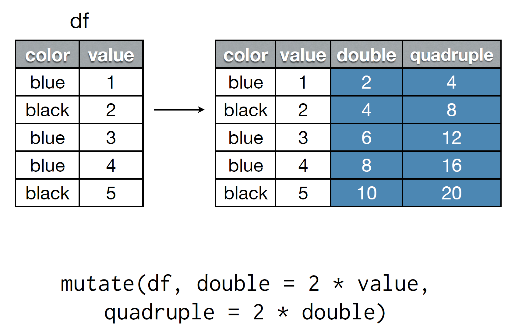
recovered_delay, that computes the difference between arrival and departure delay.speed, that contains the speed in mph for each flight. The air_time variable is in minutes and distance is in miles. Return the top 5 fastest flights.# Recovered delay
mutate(flights, recovered_delay = dep_delay - arr_delay)
# Top 5 speediest
flights %>%
mutate(speed = 60 * distance / air_time) %>%
top_n(5, speed) # doesn't return the results in order
flights %>%
mutate(speed = 60 * distance / air_time) %>%
arrange(desc(speed)) %>%
head(5)
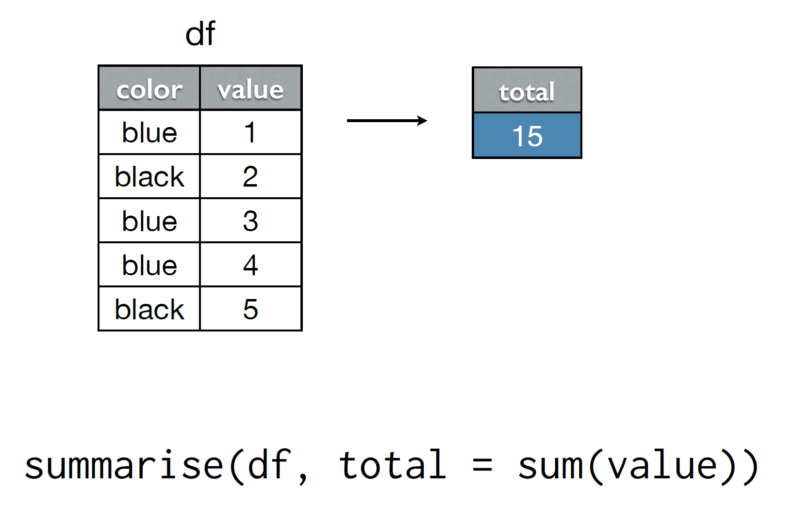
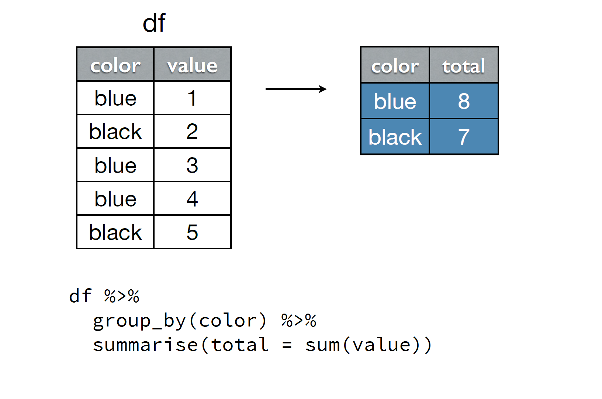
group_by destsummarise with meanarrange in descending orderflights %>%
group_by(dest) %>%
summarise(arr_delay = mean(arr_delay, na.rm = T)) %>%
arrange(desc(arr_delay)) %>%
top_n(7, arr_delay)
## Source: local data frame [7 x 2]
##
## dest arr_delay
## (chr) (dbl)
## 1 CAE 41.76415
## 2 TUL 33.65986
## 3 OKC 30.61905
## 4 JAC 28.09524
## 5 TYS 24.06920
## 6 MSN 20.19604
## 7 RIC 20.11125
Now imagine we have two tables
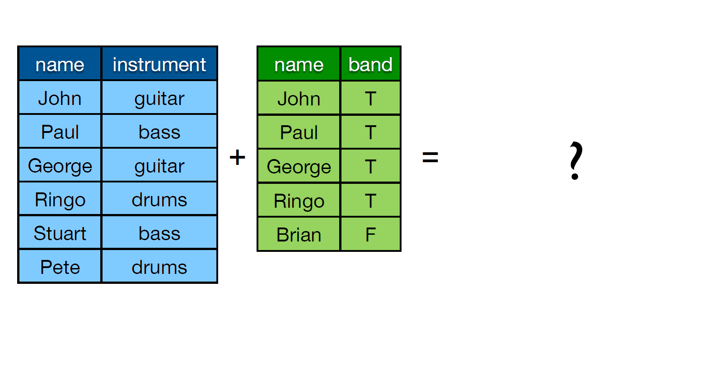
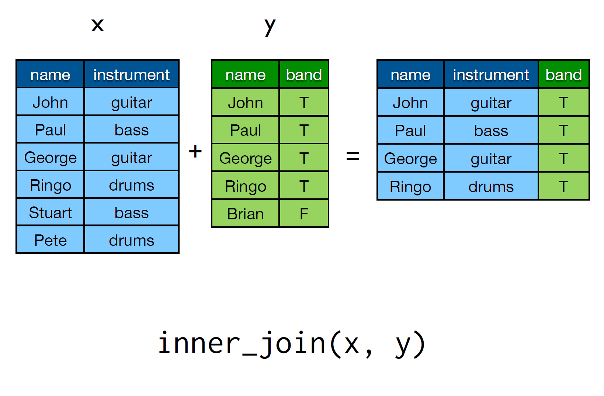

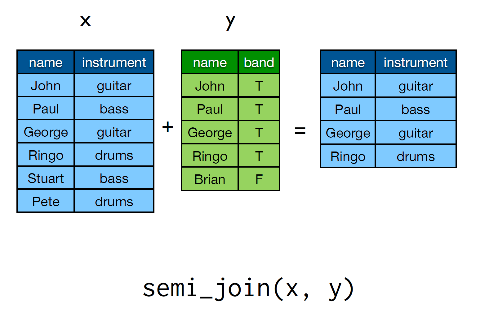
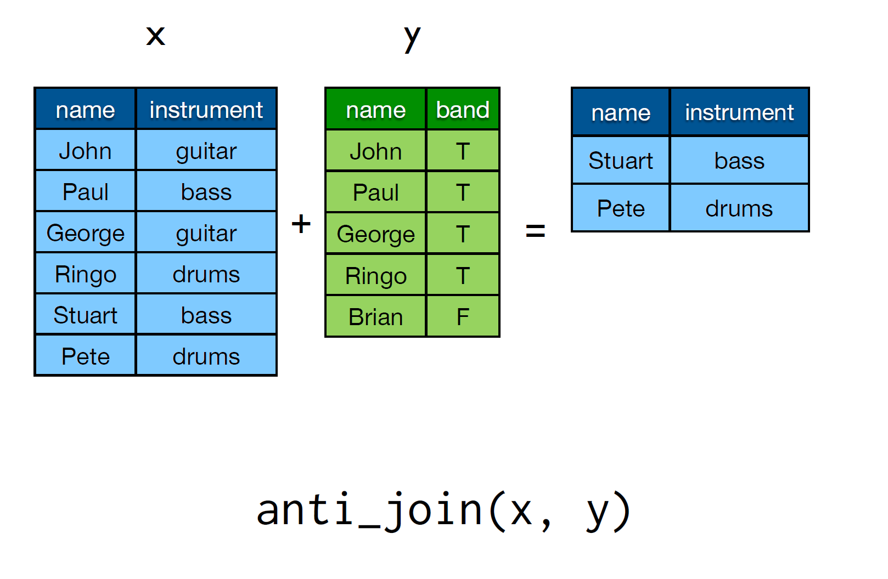
Joins are always of the form
join(x, y, by)
You can specify what columns you want to use in your match by giving a character vector to by. If no vector is given, the join will search for common names. To match on variables with different names, use a named vector. For example by = c("a" = "b") will match x.a to y.b
| Type | Description |
|---|---|
| inner | return rows in x AND y |
| left | return all of x and matching rows in y |
| semi_join | return rows of x that match y, only columns of x |
| anti_join | only rows of x not in y, keeping only columns of x |
| full_join | return all rows and all columns from both x and y, matching when possible |
These slides have been adapted from Hadley Wickham's tutorial at useR 2014.
http://www.r-bloggers.com/hadley-wickhams-dplyr-tutorial-at-user-2014-part-1/
There are two vignettes that I think would be helpful to read through: